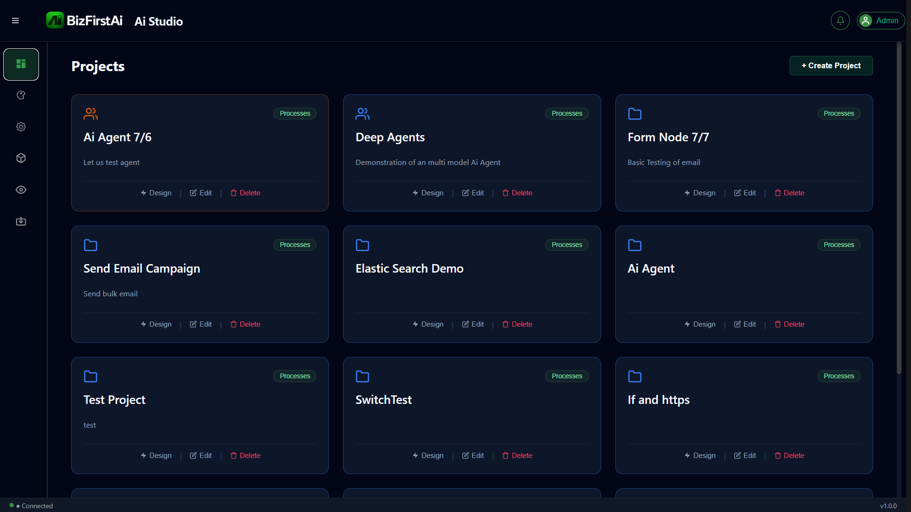

Sample Workflow Walkthrough
A complete, real, end-to-end workflow built step by step in Flow Studio — from an empty project to a running pipeline that fetches live product data, cleans it up, branches on a business rule, and reports a summary. Every field name and screenshot on these pages comes from an actual build and test run, not a mockup.
The Pipeline
Why This Sample
Rather than a toy example, this walkthrough uses real product data from a live API and every field name is taken directly from the actual node configuration forms — not simplified or renamed for the guide. That includes a few genuine surprises encountered while building it, which are called out explicitly on the relevant pages rather than smoothed over.
Live Data
Fetches real product records from dummyjson.com — nothing pre-canned.
Data Cleansing
Data Mapping renames, transforms, and derives fields — with a real gotcha about fields that get silently dropped.
Business Rule Branching
An If Condition inside a Loop routes each product based on its discount percentage.
Run Summary
A Memory Store + SMTP Email combination reports a count once the loop finishes — not per item.
Sample Data Used Throughout
Every page in this guide traces the same two products through the pipeline:
| id | title | price | discountPercentage | stock |
|---|---|---|---|---|
| 1 | Essence Mascara Lash Princess | 9.99 | 10.48 | 99 |
| 2 | Eyeshadow Palette with Mirror | 19.99 | 18.19 | 34 |
